Conversation with 81184027 at Mon 02 Jun 2014 02:42:30 PM CST on 154115835 (webqq)
(02:42:10 PM) 蔚蓝的天空: @阿赑 尼玛收拾一下去吧
(02:40:59 PM) 阿赑: 在牛B的女子 在男人的胯下都是败兵
(02:41:11 PM) 阿赑: 在牛B一点的 轮流上
(02:41:37 PM) 阿赑: 天空这个畜生给的话题
(02:41:48 PM) 阿赑: 真他妈的不是东西
(02:41:54 PM) 阿赑: 天空不要在发
(02:41:08 PM) 2440953119: 为什么聊这些
(02:41:44 PM) 2440953119: 。。。
(02:42:23 PM) 2440953119: 天空性欲。。。大
(02:42:10 PM) 蔚蓝的天空: @阿赑 尼玛收拾一下去吧
(02:40:59 PM) 阿赑: 在牛B的女子 在男人的胯下都是败兵
(02:41:11 PM) 阿赑: 在牛B一点的 轮流上
(02:41:37 PM) 阿赑: 天空这个畜生给的话题
(02:41:48 PM) 阿赑: 真他妈的不是东西
(02:41:54 PM) 阿赑: 天空不要在发
(02:41:08 PM) -蒽蒽同志: 为什么聊这些
(02:41:44 PM) -蒽蒽同志: 。。。
(02:42:23 PM) -蒽蒽同志: 天空性欲。。。大
(02:41:33 PM) 蔚蓝的天空:
(02:42:57 PM) 蔚蓝的天空:
(02:40:44 PM) 福建-福州&水浒: ！？？？
(02:40:59 PM) 阿赑: 在牛B的女子 在男人的胯下都是败兵
(02:41:08 PM) -蒽蒽同志: 为什么聊这些
(02:41:11 PM) 阿赑: 在牛B一点的 轮流上
(02:41:37 PM) 阿赑: 天空这个畜生给的话题
(02:41:44 PM) -蒽蒽同志: 。。。
(02:41:48 PM) 阿赑: 真他妈的不是东西
(02:41:54 PM) 阿赑: 天空不要在发
(02:42:10 PM) 蔚蓝的天空: @阿赑 尼玛收拾一下去吧
(02:42:23 PM) -蒽蒽同志: 天空性欲。。。大
(02:42:59 PM) -蒽蒽同志: 都30了还聊这个
(02:42:57 PM) 蔚蓝的天空:
(02:41:33 PM) 蔚蓝的天空:
(02:43:25 PM) 阿赑: 搞得好像高铁服务员一样
(02:43:50 PM) 阿赑: 上战场绝对是性奴
(02:43:55 PM) -蒽蒽同志: 你们都大了还聊这个 。。
(02:43:56 PM) 阿赑: :face13:
(02:43:56 PM) 蔚蓝的天空: @-蒽蒽同志 原来你是同志呀
(02:44:11 PM) -蒽蒽同志: 不是同志，只是名字
(02:44:24 PM) 福建-福州&水浒: :face13:
(02:44:31 PM) -蒽蒽同志: 别误会
(02:44:31 PM) 阿赑: 是个女汉子
(02:44:33 PM) 蔚蓝的天空: 擦 本群还有同志
(02:44:39 PM) 福建-福州&水浒: 好撒逼，好天真
(02:45:03 PM) 山东-青岛&昆吾: @-蒽蒽同志 同志，来一发？:face108:
(02:44:21 PM) lost message from #131173 to #131173
(02:45:09 PM) 蔚蓝的天空: 擦 还有同志
(02:45:10 PM) 阿赑: :face13:这是要逼走 同志的前奏吗？
(02:45:03 PM) 潮哥:
(02:45:10 PM) -蒽蒽同志: 女汉子倒是不是 。。。
(02:45:24 PM) -蒽蒽同志: 我不是同志好不好。。。
(02:45:38 PM) 阿赑: 女汉子加入我们的话题吧~
(02:45:40 PM) 蔚蓝的天空: 同志你好
(02:45:52 PM) -蒽蒽同志: 懒得改名好不好。。。
(02:45:56 PM) 〞Nowing↘o(╯□╰)o💋: 谁是女汉子
(02:46:02 PM) -蒽蒽同志: 没有
(02:46:15 PM) 蔚蓝的天空: 刚才同志问我性欲强吗？我擦
(02:46:26 PM) 阿赑: 试一试就知道了
(02:46:37 PM) 阿赑: 同志其实想说这句话
(02:46:38 PM) 山东-青岛&昆吾: 骚年，来一发？
(02:46:42 PM) 蔚蓝的天空: 我擦 我口味没那么重
(02:46:55 PM) -蒽蒽同志: 那你发这个干什么
(02:47:00 PM) 阿赑: 万一是你喜欢的哪种呢
(02:47:13 PM) 蔚蓝的天空: 发那个和性欲又关系吗
(02:47:16 PM) 阿赑: 蛋包饭可以上灵床了~
(02:47:19 PM) -蒽蒽同志: 好吧
(02:47:21 PM) 山东-青岛&昆吾: @蔚蓝的天空 同志！来一发！
(02:47:23 PM) -蒽蒽同志: 我错了
(02:47:30 PM) 蔚蓝的天空: 同志 你说你到底是不是同志
(02:47:34 PM) -蒽蒽同志: 不是
(02:47:41 PM) 阿赑: 女的？
(02:47:45 PM) 阿赑: 活的？
(02:47:48 PM) 山东-青岛&昆吾: @蔚蓝的天空 来一发！来一发！
(02:47:50 PM) -蒽蒽同志: 我说我是傻瓜你信啊
(02:48:02 PM) 阿赑: 信
(02:48:13 PM) -蒽蒽同志: 。。。
(02:48:19 PM) 蔚蓝的天空: 擦 我没有那么重的口味
(02:47:45 PM) lost message from #131204 to #131204
(02:48:33 PM) 蔚蓝的天空: :face13:
(02:48:39 PM) 阿赑: 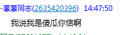
(02:48:23 PM) 阿赑:
(02:48:51 PM) 阿赑: 没见过这样给自己挖坑的主
(02:49:10 PM) 蔚蓝的天空: @-蒽蒽同志 你的个人说明说是不男不女
(02:49:19 PM) 蔚蓝的天空: 擦这个更严重
(02:49:23 PM) -蒽蒽同志: 呵呵
(02:49:29 PM) 阿赑: 一样 有菊花即可
(02:49:38 PM) 阿赑: 天空上
(02:49:50 PM) 蔚蓝的天空: @阿赑 让给你吧
(02:50:01 PM) -蒽蒽同志: 你们都多大了还欺负人:face56:
(02:50:06 PM) 蔚蓝的天空: 要不给蛋包行了 蛋包憋坏了
(02:50:23 PM) 阿赑: 我今天没什么欲望
(02:50:29 PM) 蔚蓝的天空: 适合蛋包口味
(02:50:35 PM) 阿赑: 我今年才16
(02:50:48 PM) -蒽蒽同志: 天空呢？
(02:50:56 PM) 阿赑: 他22
(02:51:00 PM) 蔚蓝的天空: 在
(02:51:07 PM) -蒽蒽同志: 光？
(02:51:13 PM) 蔚蓝的天空: @-蒽蒽 我性欲很强
(02:51:15 PM) 阿赑: 18岁当兵 去年复员的
(02:51:24 PM) -蒽蒽同志: 。。。
(02:51:29 PM) 蔚蓝的天空: 但是我接受不了同志
(02:51:35 PM) 阿赑: 光30多
(02:51:37 PM) 〞Nowing↘o(╯□╰)o💋: 你们到底
(02:51:41 PM) 〞Nowing↘o(╯□╰)o💋: 是想
(02:51:57 PM) -蒽蒽同志: 全能狗
(02:51:59 PM) 〞Nowing↘o(╯□╰)o💋: 搞基
(02:52:01 PM) 〞Nowing↘o(╯□╰)o💋: 的
(02:52:03 PM) 山东-青岛&昆吾: @蔚蓝的天空 窗台明月轻帘影，夜半盏灯抚君菊
(02:52:05 PM) 〞Nowing↘o(╯□╰)o💋: 节奏么
(02:52:17 PM) -蒽蒽同志: 语言上吧
(02:52:21 PM) 阿赑: 全能狗？
(02:52:25 PM) -蒽蒽同志: 大家都是直男
(02:52:42 PM) 阿赑: 那我们围城一个圈 都有的玩吧~
(02:52:54 PM) 福建-福州&水浒: :face56::face56:
(02:52:55 PM) 阿赑: 都不吃亏
(02:53:00 PM) 〞Nowing↘o(╯□╰)o💋: 晚上你们互搞算了
(02:53:06 PM) 〞Nowing↘o(╯□╰)o💋: 注意卫生就好了
(02:53:09 PM) -蒽蒽同志: 楼上变态
(02:53:18 PM) 福建-福州&水浒: :face97:
(02:53:24 PM) 阿赑: 同意楼上说的
(02:53:30 PM) ◆◇ヽ谜ゝ: 这群博大精深
(02:53:37 PM) 蔚蓝的天空: 你到底是不是同志 给大家解释清楚
(02:53:46 PM) -蒽蒽同志: 不是
(02:53:47 PM) 蔚蓝的天空: 本群真是无所不容
(02:53:57 PM) 蔚蓝的天空: 不是同志
(02:54:00 PM) 蔚蓝的天空: 是什么
(02:54:04 PM) 潮哥: :face13:
(02:54:13 PM) -蒽蒽同志: 我是女的:face56:
(02:54:18 PM) 阿赑: 我要去旧货市场转转 我发现上了岁数就喜欢点不动产
(02:55:19 PM) 蔚蓝的天空: @-蒽蒽 你是女的 那干嘛问我性欲强不强
(02:55:33 PM) -蒽蒽同志: 同志是男的，和我不擦边
(02:55:33 PM) 潮哥: 想跟你来一发
(02:55:07 PM) lost message from #131258 to #131258
(02:55:55 PM) -蒽蒽同志: 没有问你性欲强不强
(02:55:54 PM) 蔚蓝的天空:
(02:56:06 PM) -蒽蒽同志: 感觉是变态？:face83:
(02:56:19 PM) 〞Nowing↘o(╯□╰)o💋: @蔚蓝的天空 你这图从哪里来的
(02:56:29 PM) 福建-福州&水浒: :face98:
(02:56:59 PM) 蔚蓝的天空: -蒽蒽同志
天空性欲。。。大
(02:57:06 PM) -蒽蒽同志: 在这个群里说着说着扯到那里
(02:57:19 PM) -蒽蒽同志: 不觉得奇怪吗？天空 。
(02:57:31 PM) Οo釋然のL∮: 全能神这次应该要被打击了吧
(02:57:32 PM) 蔚蓝的天空:
(02:57:39 PM) 蔚蓝的天空: :face13:
(02:57:45 PM) -蒽蒽同志: 拜托 。。。。
(02:57:55 PM) 福建-福州&水浒: 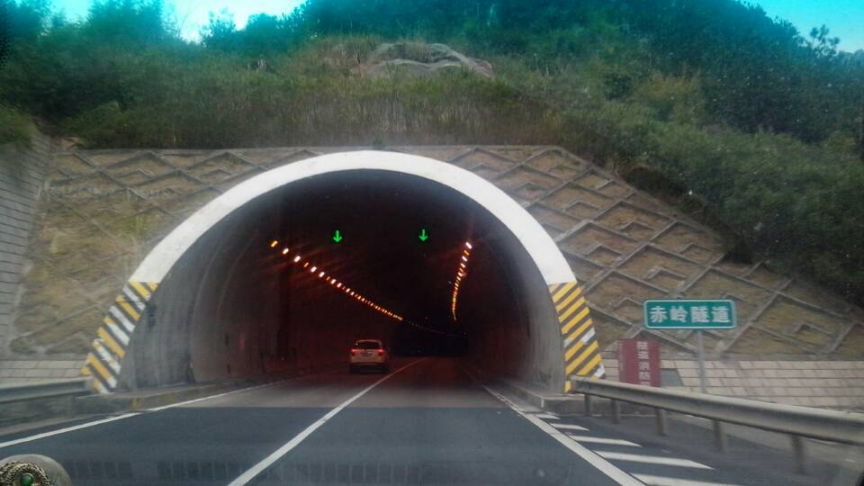
(02:58:22 PM) 蔚蓝的天空: @-蒽蒽 你要真是女同志 我就不说了
(02:58:31 PM) -蒽蒽同志: 不是同志:face87:
(02:58:36 PM) 蔚蓝的天空: 必须尊重女同志
(02:58:41 PM) -蒽蒽同志: 。。。
(02:58:44 PM) 〞Nowing↘o(╯□╰)o💋: 嗯嗯
(02:58:47 PM) 〞Nowing↘o(╯□╰)o💋: 是女的
(02:58:55 PM) 〞Nowing↘o(╯□╰)o💋: 不要猜疑她了
(02:59:05 PM) 蔚蓝的天空: 不能挑逗女同志 否则后果自负
(02:59:12 PM) 〞Nowing↘o(╯□╰)o💋: 而且年龄不大
(02:59:15 PM) -蒽蒽同志: 不是同志啊
(02:59:28 PM) 蔚蓝的天空: @-蒽蒽 你小孩
(02:59:33 PM) -蒽蒽同志: 是的
(02:59:34 PM) 〞Nowing↘o(╯□╰)o💋: 是的
(02:59:42 PM) 〞Nowing↘o(╯□╰)o💋: 估计15 6吧
(02:59:47 PM) -蒽蒽同志: 不是
(02:59:53 PM) 蔚蓝的天空: 擦
(02:59:59 PM) 〞Nowing↘o(╯□╰)o💋: 最多20
(03:00:04 PM) 蔚蓝的天空: 祖国的花朵啊
(03:00:15 PM) 福建-福州&水浒: :face3:
(03:00:27 PM) 〞Nowing↘o(╯□╰)o💋: 睡觉了
(03:00:33 PM) 〞Nowing↘o(╯□╰)o💋: 下午还上班呢
(03:00:42 PM) 〞Nowing↘o(╯□╰)o💋: 累死的节奏
(03:00:46 PM) ◆◇ヽ谜ゝ: 花骨朵 含苞待放
(03:00:50 PM) -蒽蒽同志: 告诉你们会吓一跳，不过我和大人聊起来顺畅一些
(03:01:21 PM) 蔚蓝的天空: 同志都吓不倒 你说吧还有什么
(03:01:42 PM) -蒽蒽同志: 我都说我不是同志好不好？
(03:01:44 PM) 〞Nowing↘o(╯□╰)o💋: 你啊，以我的经验一看你就是小孩子 而且是女的
(03:01:46 PM) 安徽-市区&钟馗: 希望528事件不会像2012年12月21日一样被媒体和有关单位轻易地翻过乃至淡忘。希望528事件能够成为全国范围内地毯式打灭全能神邪教徒的导火线！
(03:02:11 PM) 〞Nowing↘o(╯□╰)o💋: 看你的聊天态度，和说话语气，和文字表达
(03:02:18 PM) -蒽蒽同志: 的确
(03:02:40 PM) 山东-青岛&昆吾: :face1:
(03:02:45 PM) 蔚蓝的天空: @-蒽蒽 你要证明你不是同志
(03:02:50 PM) -蒽蒽同志: 不是
(03:02:54 PM) 蔚蓝的天空: 也不是拉拉
(03:03:00 PM) -蒽蒽同志: 不是
(03:03:04 PM) 蔚蓝的天空: :face13:
(03:03:08 PM) -蒽蒽同志: 学生党
(03:03:14 PM) ◆◇ヽ谜ゝ: 好啊
(03:03:18 PM) 蔚蓝的天空: 哦
(03:03:29 PM) 蔚蓝的天空: 早上八九点钟的太阳
(03:03:48 PM) -蒽蒽同志: 年龄就不说了。
(03:04:06 PM) ◆◇ヽ谜ゝ: 洗洗睡吧 别想太多
(03:04:15 PM) -蒽蒽同志: 不困
(03:04:27 PM) ◆◇ヽ谜ゝ: 伤脑筋
(03:04:39 PM) -蒽蒽同志: 放心我热爱祖国
(03:04:45 PM) 蔚蓝的天空: 刚才一问性欲强不强 把我问蒙了
(03:05:12 PM) 蔚蓝的天空: 判断是90后
(03:05:25 PM) ◆◇ヽ谜ゝ: 有需求才有市场
(03:05:26 PM) -蒽蒽同志: 看你这发图片的
(03:05:27 PM) 蔚蓝的天空: 直接明了:face13:
(03:05:33 PM) -蒽蒽同志: 感觉是变态啊
(03:05:43 PM) -蒽蒽同志: 所以才这样说
(03:05:49 PM) 蔚蓝的天空: 发图片和性欲没关系
(03:06:13 PM) 蔚蓝的天空: 那些女人穿的都是正装
(03:06:23 PM) 蔚蓝的天空: 又不是衣着暴露
(03:06:35 PM) 安徽-市区&钟馗: http://forum.china.com.cn/forum.php?mod=viewthread&tid=3648380&extra=page%3D1%26filter%3Dtypeid%26typeid%3D850%26typeid%3D850
(03:06:39 PM) -蒽蒽同志: 可是我会想到制服。:face88:
(03:06:50 PM) -蒽蒽同志: 脑洞大没办法
(03:06:51 PM) ◆◇ヽ谜ゝ: 所以你想多了
(03:07:21 PM) 蔚蓝的天空: @-蒽蒽 你太。。。都想到制服诱惑了
(03:07:56 PM) 蔚蓝的天空: 看看生活中也是高手
(03:08:09 PM) 蔚蓝的天空: :face13:
(03:08:10 PM) 阿赑: 少了一个字
(03:08:13 PM) -蒽蒽同志: 这年头小学生都知道制服诱惑啊
(03:08:13 PM) 阿赑: 性生活
(03:08:18 PM) -蒽蒽同志: 我老了
(03:08:36 PM) 阿赑: 你进这个群是什么意思？
(03:08:40 PM) 阿赑: 同志
(03:08:42 PM) -蒽蒽同志: 好吧
(03:08:44 PM) -蒽蒽同志: 转移话题
(03:08:56 PM) 蔚蓝的天空: 那么正规的着装你都能想到制服诱惑
(03:08:58 PM) 安徽-市区&钟馗: 希望528事件不会像2012年12月21日一样被媒体和有关单位轻易地翻过乃至淡忘。希望528事件能够成为全国范围内地毯式打灭全能神邪教徒的导火线！
(03:09:00 PM) -蒽蒽同志: 继续讨论全能狗
(03:09:07 PM) 蔚蓝的天空: 你的想象力真丰富
(03:09:14 PM) 阿赑: 请相信本届政府！
(03:09:22 PM) 蔚蓝的天空: 全能话题太沉重
(03:08:38 PM) 光: 邪教十大特征
法国情报总署根据其对邪教问题的多年追踪经验，对邪教作出了以下十个特点：
第一，邪教对其信徒实行精神控制，信徒必须遵循“精神领袖”的旨意而行动。这种精神控制之严重，早已超出人们的想象。
【这是说共产党和纳粹党吧。】
第二，邪教通过信徒大肆敛财。邪教头目几乎都这样做，因此邪教往往拥有强大的经济实力。邪教敛财的手段也是多种多样的。有的邪教要求入会者交纳年收入的3%作为“会费”；有的通过举办培训班收取费用；有的出版会刊、教刊等。
【3%，好低的税率，奥派自由主义者的梦想国度啊。】
第三，邪教脱离正常社会生活。邪教的内部法则高于正常的社会法规，信徒必须首先遵守会规。使信徒脱离社会，就能使信徒失去家庭和朋友的帮助，彻底被纳入邪教内部去了。有的即使后悔，也难以脱身了。
【内部法则高于正常的社会法则，是说共产党的党纪和双规吧。】
第四，邪教侵犯个人身体。特别是对女性信徒和儿童来说，人身侵犯，包括性侵犯已是邪教信徒中经常出现的悲剧。
【事实上，任何一个邪教的性开放程度都远远低于豆瓣网友、果壳网友、微信网友。】
第五，邪教吸收儿童入会。我国法律是禁止向儿童传授宗教内容的。但邪教则毫无顾忌。
【少先队怎么回事】
第六，邪教具有反社会性质，即社会是如此“丑恶”，只有加入“教会”才能净化灵魂。
【文艺女青年最喜欢去西藏洗涤灵魂了】
第七，邪教扰乱社会正常秩序。
【文革，反右，镇反，土改，国共内战，中原大战，都发生在邪教势利很弱的时候】
第八，邪教不断引起司法纠纷。对一位写书揭露其邪教实质和内幕的记者富贝尔进行围攻和提出起诉，说他无理攻击“科学神教”。法院最终判处“科学神教”败诉。
【这是说方舟子和罗永浩吧】
第九，邪教经常性地转移资金。
【这是说中共官员吧】
第十，邪教试图渗入公共权力机构，以求扩大影响。正如富贝尔所披露，“科学神教”已经渗透到内政部、文化部等政府部门，甚至渗透到已故前总统密特朗周围。
【只许政党把党支部建在单位么。】
(03:08:46 PM) lost message from #131348 to #131349
(03:09:33 PM) -蒽蒽同志: 是丰富，所以不要说了
(03:08:50 PM) 光: http://jianshu.io/p/d67eae78de3d
(03:09:53 PM) 阿赑: 我比你更丰富
(03:10:59 PM) 蔚蓝的天空: @阿赑 :D
(03:11:10 PM) 蔚蓝的天空: 意淫严重
(03:11:28 PM) 蔚蓝的天空: 小心前列腺发言
(03:11:33 PM) -蒽蒽同志: 天空。你加我干什么
(03:11:35 PM) -蒽蒽同志: 。。。
(03:11:46 PM) -蒽蒽同志: 换个话题好不好
(03:12:11 PM) 蔚蓝的天空: 加你 是好奇
(03:12:23 PM) 蔚蓝的天空: 想弄清同志的问题
(03:12:29 PM) 蔚蓝的天空: :D
(03:12:37 PM) -蒽蒽同志: 同志，只是名字
(03:12:51 PM) -蒽蒽同志: 不要太过注意好吗？
(03:12:16 PM) lost message from #131364 to #131364
(03:13:04 PM) 蔚蓝的天空: 不说了
(03:13:03 PM) 自力: 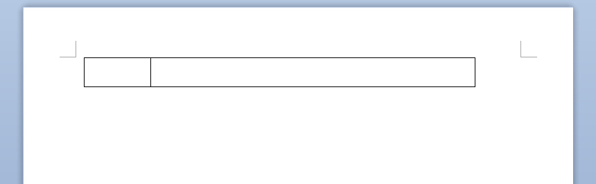
(03:13:09 PM) 自力: 怎么删除谁知道
(03:13:19 PM) 蔚蓝的天空: 言归正传
(03:13:33 PM) 蔚蓝的天空: 擦 这些问题 你问光
(03:12:47 PM) 光: 全选 剪切
(03:13:06 PM) 光: 或者ctrl z 撤销
(03:13:54 PM) -蒽蒽同志: 全选，删除键
(03:13:15 PM) 光: 方法很多自己想
(03:14:15 PM) 自力: 我删除就全部都删除了
(03:14:19 PM) 自力: 说下我急
(03:14:28 PM) 自力: 我现在没时间摸索我在外面打印带你
(03:14:30 PM) 自力: 打印店
(03:14:33 PM) 自力: 马上去面试了
(03:13:49 PM) 光: 哦
(03:14:38 PM) 自力: 老板也不会设置
(03:14:39 PM) -蒽蒽同志: 。。。
(03:13:57 PM) 光: 简单啊
(03:14:02 PM) 光: 浪费一页没关系
(03:14:12 PM) lost message from #131383 to #131383
(03:14:59 PM) 自力: 我删除下面这一栏空白的
(03:14:59 PM) 自力: 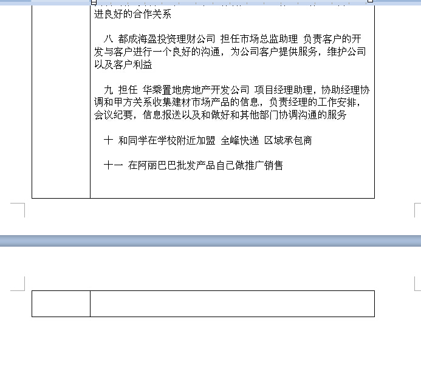
(03:15:03 PM) 自力: 就把上面的一起删除了
(03:15:18 PM) 自力: 只删除蓝色线以下
(03:15:21 PM) 蔚蓝的天空: 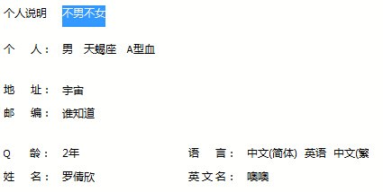
(03:14:38 PM) 光: 是不是里面有一个多余的换行符
(03:15:39 PM) 自力: 没
(03:15:47 PM) -蒽蒽同志: 。。
(03:15:05 PM) 光: 你别问我了
(03:15:15 PM) 光: 我不用win的办公软件的
(03:16:11 PM) 自力: 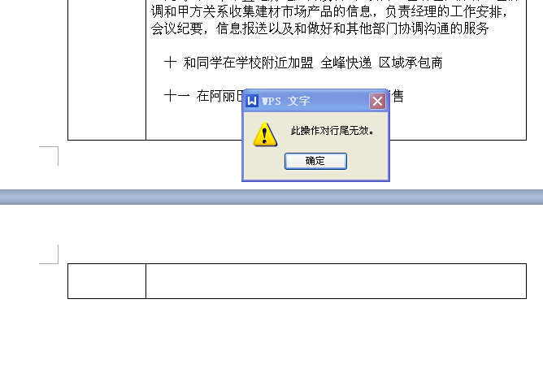
(03:15:40 PM) 光: 下一页是怎样
(03:15:51 PM) 光: 实在不行，先都打印出来
(03:16:40 PM) 自力: 怎么删除整页
(03:15:56 PM) 光: 把有问题的拿掉
(03:16:08 PM) 光: 你不是要打印么
(03:17:02 PM) 自力: 嗯
(03:17:03 PM) -蒽蒽同志: 不要把我资料放出来啊
(03:16:20 PM) 光: 都打出来
(03:17:16 PM) 自力: 只是为了节约钱
(03:17:18 PM) 自力: 1块钱一张
(03:16:37 PM) 光: 然后把那个错版的拿掉
(03:16:46 PM) 光: 你现在是赶时间
(03:16:57 PM) 光: 不要磨叽一块钱了
(03:17:17 PM) 光: 知识回头补
(03:19:44 PM) -蒽蒽同志: 一块钱算什么啊:敲打:
(03:23:26 PM) 潮哥: :D
(03:29:15 PM) 阿萨汗蛋包飯: 暴雨:umbrella:
(03:29:16 PM) 蔚蓝的天空: 一块钱可以买两个馒头
(03:29:25 PM) 蔚蓝的天空: 蛋包来了
(03:30:18 PM) 阿萨汗蛋包飯: 任务栏变成右侧了怎么解决，求助
(03:30:32 PM) 阿萨汗蛋包飯: 任务栏突然变成屏幕的右侧了
(03:30:47 PM) 蔚蓝的天空: 光 回答
(03:31:11 PM) 蔚蓝的天空: 蛋包 百度可以告诉你
(03:31:11 PM) 阿萨汗蛋包飯: 光：任务栏突然变成屏幕的右侧了:L
(03:31:58 PM) 山东-青岛&昆吾: 左键
(03:32:12 PM) 山东-青岛&昆吾: 有个什么设置
(03:32:16 PM) 山东-青岛&昆吾: 我忘了
(03:32:32 PM) 山东-青岛&昆吾: 不对，右键
(03:32:40 PM) 福建-福州&水浒: 360告诉你
(03:32:56 PM) 安徽-市区&钟馗: 山东检方提前介入招远血案 教徒家属吁政府介入http://news.sohu.com/20140602/n400317647.shtml
(03:33:02 PM) 阿萨汗蛋包飯: 好的，恢复了:D找到答案
(03:33:11 PM) 阿萨汗蛋包飯: 左键按住任务栏，然后拉到屏幕下侧就可以了。:D
(03:33:52 PM) 福建-福州&水浒: :D
(03:35:09 PM) 蔚蓝的天空:  解放前的上海：杀戮、动荡与经济崩溃
解放前的上海：杀戮、动荡与经济崩溃
(03:35:43 PM) 蔚蓝的天空:
(03:37:48 PM) 蔚蓝的天空:
(03:39:07 PM) 蔚蓝的天空:
(03:40:28 PM) 蔚蓝的天空: 抗日战争结束时，各地物价和黄金、外汇价格普遍猛烈下跌。国民政府为了发动反共反人民的内战，解决庞大的军费开支，变本加厉地继续实行恶性通货膨胀政策。国民政府承认“自1945年起，发行膨胀，速度比抗战时更快”
(03:40:39 PM) 安徽-市区&钟馗: 中国反邪教协会副理事长：全能神才是真正恶魔http://www.chinanews.com/fz/2014/06-02/6235699.shtml
(03:42:25 PM) 蔚蓝的天空: 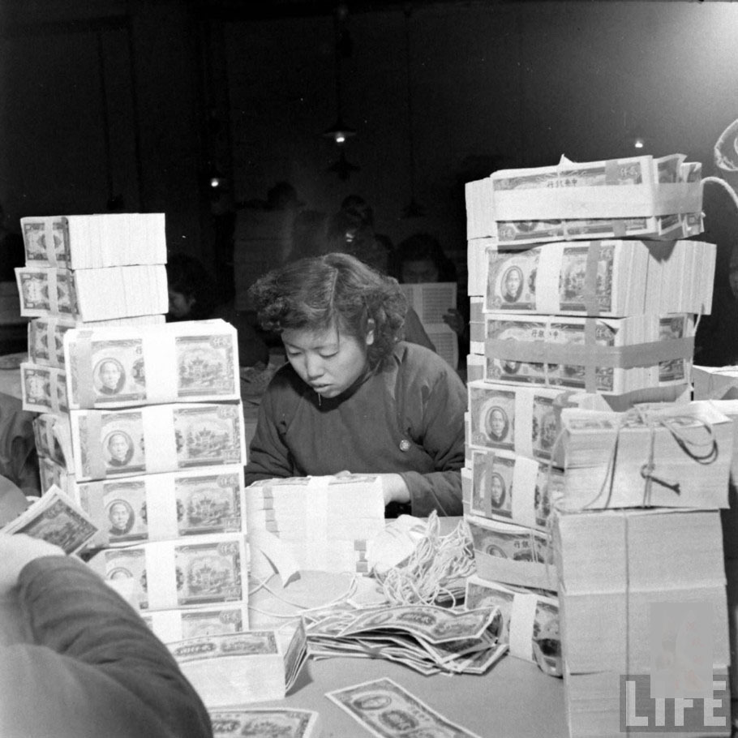
(03:42:53 PM) 蔚蓝的天空:
(03:43:52 PM) 安徽-市区&钟馗: 破除“全能神”的伪装http://gov.163.com/14/0602/14/9TO93N8000234IG8.html?360lm
(03:53:28 PM) 阿萨汗蛋包飯: 今日许多婚姻、爱情的失败，在很大程度上是在人们错把＂喜欢＂当作＂爱＂。喜欢，出发点往往是自我，以自己的满足、获得、好恶作为标准；真爱，出发点却是对方，以对方的幸福、欢乐、益处为目标。因爱是#不求自己的益处#（林前13：5）。为此，婚姻、爱情，真正需要的，是爱！不是喜欢！
(04:01:21 PM) 潮哥: :D
(04:19:57 PM) 潮哥: 人呢
(04:20:11 PM) 阿赑: 这话说出了我的心声
(04:20:26 PM) 阿赑: 合着我一直只是喜欢 没有爱过
(04:35:35 PM) 山东-青岛&昆吾: ① ②③④⑤！
(04:37:08 PM) 福建-福州&水浒: 城管今天有出洞上街抢劫么？:D
(04:37:16 PM) 山东-青岛&昆吾: 木有
(04:37:26 PM) 山东-青岛&昆吾: 放假，下雨
(04:37:40 PM) 山东-青岛&昆吾: @心碎乌托邦 你手机号多少？X-)
(04:38:03 PM) 福建-福州&水浒: 夏天到了西瓜成熟了
(04:38:15 PM) 福建-福州&水浒: 少抢点
(04:38:24 PM) 山东-青岛&昆吾: @心碎乌托邦 :d
(04:38:28 PM) 福建-福州&水浒: 15159612785
(04:38:33 PM) 福建-福州&水浒: 欢迎致电
(04:38:37 PM) 福建-福州&水浒: :D
(04:38:53 PM) 山东-青岛&昆吾: @心碎乌托邦 给的很痛快啊～
(04:39:07 PM) 福建-福州&水浒: 不过好像快停费了
(04:39:15 PM) 福建-福州&水浒: 过两天再冲
(04:39:42 PM) 山东-青岛&昆吾: ;-)
(04:39:57 PM) 山东-青岛&昆吾: 现在流行要手机号～
(04:40:11 PM) 福建-福州&水浒: 有何企图X-)
(04:40:30 PM) 山东-青岛&昆吾: 不给？拖把棍伺候！
(04:40:34 PM) 福建-福州&水浒: 你想模仿么？
(04:40:41 PM) 福建-福州&水浒: --b
(04:43:21 PM) 阿赑: 我买了一把刀给你
(04:43:25 PM) 福建-福州&水浒: 我还给信徒留过电话～～～
(04:43:27 PM) 阿赑: 不给直接用刀
(04:45:45 PM) 山东-青岛&昆吾: 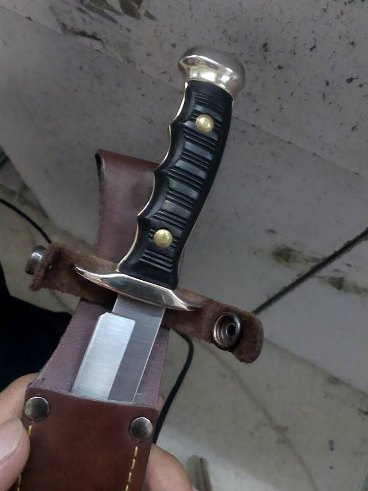
(04:45:52 PM) 山东-青岛&昆吾: 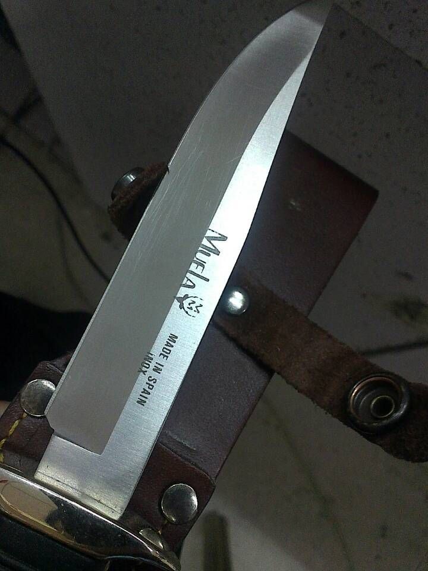
(04:46:04 PM) 山东-青岛&昆吾: 这两天又带上了，实在吓死人
(04:46:05 PM) 福建-福州&水浒: :!
(04:46:32 PM) 福建-福州&水浒: 城管可以配刀，这是作死嘛
(04:46:35 PM) 福建-福州&水浒: :|
(04:46:47 PM) 阿萨汗蛋包飯: 你这刀还西班牙的？
(04:46:49 PM) 阿萨汗蛋包飯: 进口货
(04:47:48 PM) 福建-福州&水浒: :O还真是西班牙出品
(04:48:52 PM) 福建-福州&水浒: 太暴力了～～
(04:49:40 PM) 山东-青岛&昆吾: 西班牙
(04:49:53 PM) 山东-青岛&昆吾: 自己拿着用的
(04:50:01 PM) 山东-青岛&昆吾: 感觉尺寸合适
(04:50:13 PM) 山东-青岛&昆吾: 穿透效果好
(04:50:13 PM) 福建-福州&水浒: 防身
(04:50:26 PM) 福建-福州&水浒: 试过？
(04:50:50 PM) 山东-青岛&昆吾: 也不完全是，万一碰上这种事还可以拼一下
(04:50:52 PM) 福建-福州&水浒: 难道你是通缉犯，围观啊，抓人了
(04:51:01 PM) 阿萨汗蛋包飯: 城管就是屌
(04:51:17 PM) 阿萨汗蛋包飯: 那刀短了，砍城管的都是用马刀
(04:51:18 PM) 福建-福州&水浒: 城管是屌
(04:51:19 PM) 潮哥: 上地铁检查直接没收
(04:51:40 PM) 福建-福州&水浒: 城管屌
(04:51:48 PM) 福建-福州&水浒: 城屌
(04:51:54 PM) 福建-福州&水浒: 屌
(04:51:54 PM) 福建-福州&水浒: :D
(04:52:07 PM) 山东-青岛&昆吾: 不为别的，就是碰见这种事的时候有一个让自己敢冲上去的理由
(04:52:45 PM) 潮哥: 吊炸天
(04:52:58 PM) 山东-青岛&昆吾: 虽不杀伯仁，伯仁实因我而死
(04:53:06 PM) 山东-青岛&昆吾: 这种感觉不好受
(04:53:10 PM) 潮哥: 碰见小贩冲上去吧
(04:53:38 PM) 山东-青岛&昆吾: 见义不为比牺牲了还难受
(04:53:42 PM) 阿萨汗蛋包飯: 殺せ
(04:53:58 PM) 山东-青岛&昆吾: @阿萨汗蛋包飯 你妹的马刀]-|
(04:54:00 PM) 阿萨汗蛋包飯: 小贩拿马刀砍城管
(04:54:15 PM) 山东-青岛&昆吾: @阿萨汗蛋包飯 用马刀的中了12枪
(04:54:22 PM) 阿萨汗蛋包飯: :D
(04:54:39 PM) 山东-青岛&昆吾: @心碎乌托邦 :刀:你说了手机号也晚了X-)X-)X-)
(04:55:16 PM) 潮哥: 城管厉害，踏平小日本
(04:55:30 PM) 山东-青岛&昆吾: @潮哥 见你冲上去！噗噗两刀，把你车带捅了～
(04:55:47 PM) 阿萨汗蛋包飯: 殺してしまい
(04:56:24 PM) 潮哥: 城管就是猛
(04:57:10 PM) 山东-青岛&昆吾: 唯一一次穿制服用刀
(04:57:15 PM) 阿赑: 城管基本都是退役军人
(04:57:16 PM) 山东-青岛&昆吾: 是在商场
(04:57:37 PM) 蔚蓝的天空: :D
(04:57:40 PM) 阿赑: 我们的同志呢、
(04:57:50 PM) 潮哥: 为何
(04:58:04 PM) 潮哥: 同志
(04:58:05 PM) 蔚蓝的天空: @-蒽蒽 同志
(04:58:08 PM) 山东-青岛&昆吾: 一个小孩子的鞋带缠进扶梯夹缝了
(04:58:29 PM) 阿赑:
@-蒽蒽同志
(04:58:41 PM) 山东-青岛&昆吾: 我用匕首割断了他的鞋带
(04:58:49 PM) 蔚蓝的天空: :D
(04:59:00 PM) 阿赑: 你上街还带刀？
(04:59:08 PM) 山东-青岛&昆吾: 有时候
(04:59:17 PM) 阿赑: 干嘛？
(04:59:20 PM) 山东-青岛&昆吾: 这几天就带着
(05:00:16 PM) 山东-青岛&昆吾: 一般一把工具刀，像瑞士军刀之类，用来干活
(05:00:39 PM) 山东-青岛&昆吾: 加一把匕首类的
(05:00:43 PM) 福建-福州&水浒: 干活？
(05:00:51 PM) 山东-青岛&昆吾: 嗯
(05:01:05 PM) 福建-福州&水浒: 当扒手么
(05:01:06 PM) 福建-福州&水浒: :D
(05:01:09 PM) 山东-青岛&昆吾: 割横幅
(05:01:21 PM) 潮哥: 防止抗议吗
(05:01:30 PM) 山东-青岛&昆吾: 城管不偷东西
(05:01:34 PM) 山东-青岛&昆吾: 直接抢
(05:01:43 PM) 山东-青岛&昆吾: @潮哥 广告横幅
(05:02:17 PM) 福建-福州&水浒: 直接抢～～
(05:02:25 PM) 福建-福州&水浒: 够狠～～
(05:02:49 PM) 山东-青岛&昆吾: @心碎乌托邦 B-)
(05:03:18 PM) 福建-福州&水浒: 土匪
(05:03:39 PM) 福建-福州&水浒: 穿制服的土匪，
(05:03:40 PM) 福建-福州&水浒: :D:$
(05:05:40 PM) 潮哥: 土匪
(05:05:46 PM) 潮哥: 你是临时工还是
(05:06:37 PM) 阿赑: 谁是土匪？
(05:07:01 PM) 山东-青岛&昆吾: @潮哥 临时工
(05:07:17 PM) 阿赑: 我擦 整天骂共馋党的人 居然自己是共馋党
(05:07:21 PM) 阿赑: 城管？
(05:07:43 PM) 山东-青岛&昆吾: 俺才没骂党呢
(05:07:53 PM) 山东-青岛&昆吾: 俺相信本届政府！
(05:08:00 PM) 福建-福州&水浒: :p
(05:08:33 PM) 山东-青岛&昆吾: 你们骂的不都是万恶的资本主义反动派么？
(05:08:42 PM) 山东-青岛&昆吾: 我也跟着骂骂
(05:08:47 PM) 福建-福州&水浒: :D
(05:08:53 PM) 潮哥: :强:
(05:09:08 PM) 潮哥: 临时工可是顶罪的命
(05:09:16 PM) 山东-青岛&昆吾: 嗯
(05:09:20 PM) 福建-福州&水浒: 不好当
(05:09:42 PM) 潮哥: 待遇也不咋地吧
(05:09:50 PM) 潮哥: 有外水没
(05:09:54 PM) 山东-青岛&昆吾: 一般没事，如果老让我们定罪，兄弟们心也就寒了
(05:10:03 PM) 山东-青岛&昆吾: 没人给他出力了就
(05:10:09 PM) 山东-青岛&昆吾: 顶罪
(05:10:15 PM) 山东-青岛&昆吾: @潮哥 一般
(05:10:21 PM) 福建-福州&水浒: :D
(05:10:21 PM) 山东-青岛&昆吾: 外快极少
(05:10:38 PM) 福建-福州&水浒: 这位城管兄太善良了
(05:10:38 PM) 潮哥: 那还干个毛
(05:10:56 PM) 山东-青岛&昆吾: 过渡下
(05:11:04 PM) 福建-福州&水浒: 想正式得暴力啊，混个正的干
(05:11:11 PM) 山东-青岛&昆吾: 找关系转正
(05:11:17 PM) 福建-福州&水浒: :撇嘴:
(05:11:33 PM) 山东-青岛&昆吾: @心碎乌托邦 我也是穷人家的孩子
(05:11:33 PM) 福建-福州&水浒: 得了，关系网出来了
(05:11:41 PM) 福建-福州&水浒: 潜规则我懂
(05:11:43 PM) 阿赑:
(05:11:48 PM) 山东-青岛&昆吾: 知道赚钱不易
(05:11:55 PM) 福建-福州&水浒: 必须的
(05:12:05 PM) 山东-青岛&昆吾: 所以一般不难为别人
(05:12:14 PM) 福建-福州&水浒: 嗯，
(05:12:18 PM) 福建-福州&水浒: 有良知
(05:12:28 PM) 山东-青岛&昆吾: 应该这样做
(05:12:42 PM) 山东-青岛&昆吾: 不然丧良心
(05:12:55 PM) 山东-青岛&昆吾: 和禽兽有什么区别
(05:13:01 PM) 福建-福州&水浒: 河蟹社会要带头河蟹啊
(05:13:29 PM) 山东-青岛&昆吾: 不吃河蟹
(05:13:36 PM) 山东-青岛&昆吾: 不杀生
(05:13:45 PM) 福建-福州&水浒: 崇尚暴力不会长久
(05:14:41 PM) 山东-青岛&昆吾: 嗯
(05:15:00 PM) 阿赑: 请相信本届政府！
(05:15:07 PM) 山东-青岛&昆吾: 当然，面对暴力只能奋起反抗
(05:15:22 PM) 山东-青岛&昆吾: 以更残忍的手段结束暴力
(05:15:36 PM) 蔚蓝的天空: 擦
(05:15:50 PM) 蔚蓝的天空: 我的名言经常被使用
(05:15:53 PM) 山东-青岛&昆吾: 否则，下一个受害者就是我们自己
(05:16:26 PM) 福建-福州&水浒: 被迫着发出冒着敌人的炮火前进，
(05:16:32 PM) -蒽蒽同志: 看
(05:16:33 PM) 阿赑: 你的什么名言？
(05:16:39 PM) 福建-福州&水浒: 请相信本届政府！
(05:15:58 PM) lost message from #131596 to #131596
(05:16:44 PM) -蒽蒽同志: 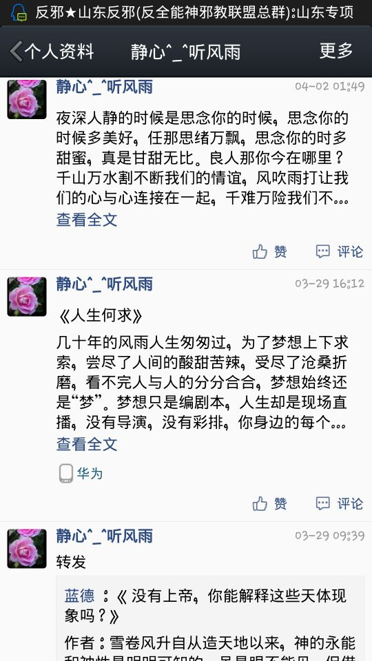
(05:16:44 PM) -蒽蒽同志: 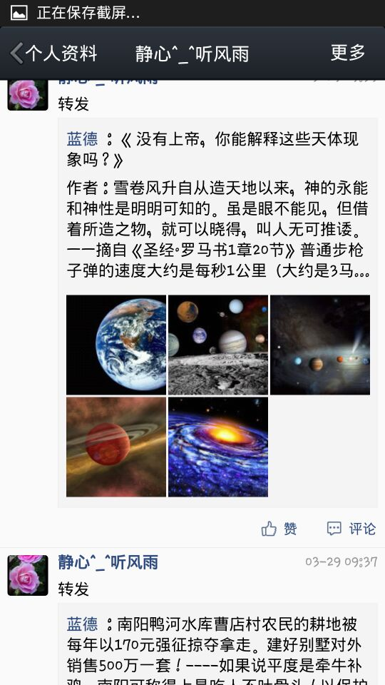
(05:16:43 PM) -蒽蒽同志: 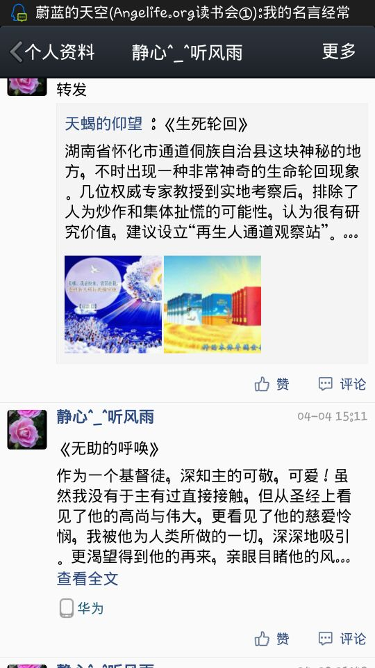
(05:16:52 PM) -蒽蒽同志: 死教徒狗
(05:17:08 PM) 福建-福州&水浒: 请相信本届政府！
(05:17:24 PM) -蒽蒽同志: 教徒！
(05:17:29 PM) -蒽蒽同志: 教徒！
(05:17:37 PM) 福建-福州&水浒: 一定会好的，天空是这样么？天空
(05:17:47 PM) 福建-福州&水浒: 请相信本届政府！
(05:18:39 PM) 阿赑: 请相信本届政府！
(05:19:22 PM) 阿赑: 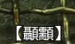
(05:19:27 PM) 阿赑: 这是什么字~
(05:20:04 PM) 蔚蓝的天空: 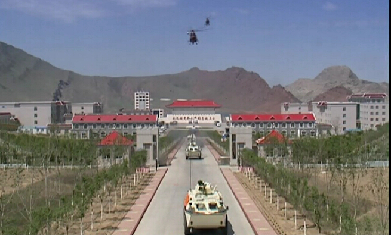
(05:21:03 PM) lost message from #131609 to #131609
(05:21:45 PM) 蔚蓝的天空:
(05:22:16 PM) 蔚蓝的天空:
(05:22:33 PM) 福建-福州&水浒: :;
(05:23:00 PM) 蔚蓝的天空: 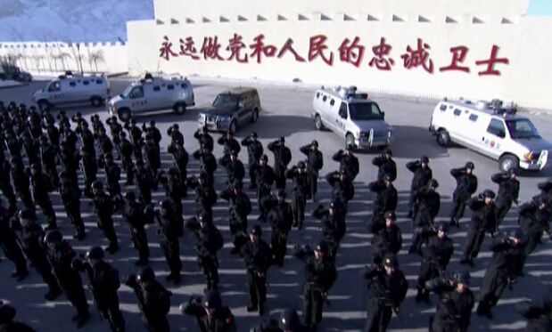
(05:24:26 PM) 潮哥: 啥几把玩意
(05:24:35 PM) 蔚蓝的天空: 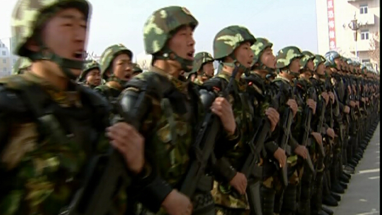
(05:26:20 PM) 阿赑: 空大屎又想当兵了
(05:26:40 PM) 阿赑: 本来就剩一根筋了 再当就变僵尸了
(05:27:31 PM) 阿赑:
(05:29:27 PM) 潮哥: 五毛
(05:29:31 PM) 阿赑: 靠 出来空大
(05:34:29 PM) lost message from #131621 to #131621
(05:35:16 PM) -蒽蒽同志: 看
(05:35:15 PM) -蒽蒽同志: 
(05:35:21 PM) -蒽蒽同志: 神经病的东西
(05:37:11 PM) 阿赑: 
(05:38:50 PM) 潮哥: :D
(05:53:15 PM) 光: 大道不过三两句，说破能值几文钱
(05:54:44 PM) 福建-福州&水浒: ？？
(05:54:37 PM) 光: http://www.douban.com/people/4359732/status/1408248073/
(05:54:44 PM) 光: 田野调查中见过一次全能教徒，其仪式就是伴随铙声手舞足蹈，激似广场舞。摄于2011年农历三月河北井陉苍岩山庙会。
(05:54:57 PM) 光: 还有这种？
(05:56:37 PM) 光: 度眠 说: 挺有意思的，看中国的高等教育研究，大家都把大学生的就业率及就业水平作为头等问题，但美国的教育研究却把“毕业率”和“平均毕业时间”作为头 等问题。是因为后者没有这方面的担忧吗？还是因为美国本科毕业这种事把关很严，不像中国走过场？还有成本问题，为啥美国高等教育这么贵，质量高？
(05:57:34 PM) 光: 有道理，前面卡的紧，后面质量高
(05:57:40 PM) 光: 不放水
(05:58:29 PM) 光: http://www.douban.com/people/58791669/status/1409344278/
(06:00:37 PM) 光: 通过一个个的“词”来为自己或他人贴标签变成了最为方便的一种看待世界的方法论，然而这种方法论投射到性格上，每个人看自己都觉得好矛盾，觉得 自己特别不容易，那么的特殊。而这种方法论如果投射到行为上，就成了“符号”，而有着同样“符号”的一群人，自然就产生了团体，进而产生归属感。
(06:01:35 PM) 光: “门槛”就成了区分“食物链”位置的主要条件，门槛越高，比如古典与爵士，则离大众越远，欣赏的人越少，越与众不同，而由此带来的社会评价也随之增长，以“高端”誉之，言下之意就是“一般人欣赏不了”。
如果真是这样，听流行的听流行，听古典的听古典，凯撒归凯撒，尘土归尘土，这个世界倒也相安无事。然而那些依仗着高社会评价来“鄙视”其下的那部分人和想要假装听得懂古典爵士来获得高社会评价的那部分人，共通催生出了“装逼”这个词，并由此暗伏了一条“装逼食物链”，“门槛”在这里也被换了一种说法，改称“逼格”。
同样，在书籍方面也有一条比较复杂的“食物网”，大略归纳出一条：哲学＞古典文学＞现代文学＞网络小说。
而这些东西又都是“符号”，而是因为有一或者无意的产生“符号”，加之有些人伪装出来刻意的喜好，以至于让人无法判断他是真正喜欢还是装给别人看的，然而装给别人看的人总体而言比真正喜欢的人高调许多也更容易被识破，这样，“文艺青年”这个团体就开始变质了。
(06:03:03 PM) 光: http://jianshu.io/p/06fe9c7cd38e
(06:04:56 PM) 光: A person acts morally when he or she acts as if his or her conduct was establishing a universal law governing others in similar circumstances. @康德
(06:15:13 PM) The account has disconnected and you are no longer in this chat. You will automatically rejoin the chat when the account reconnects.